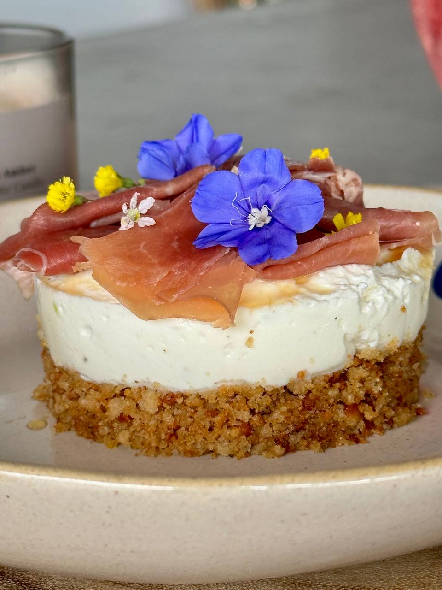
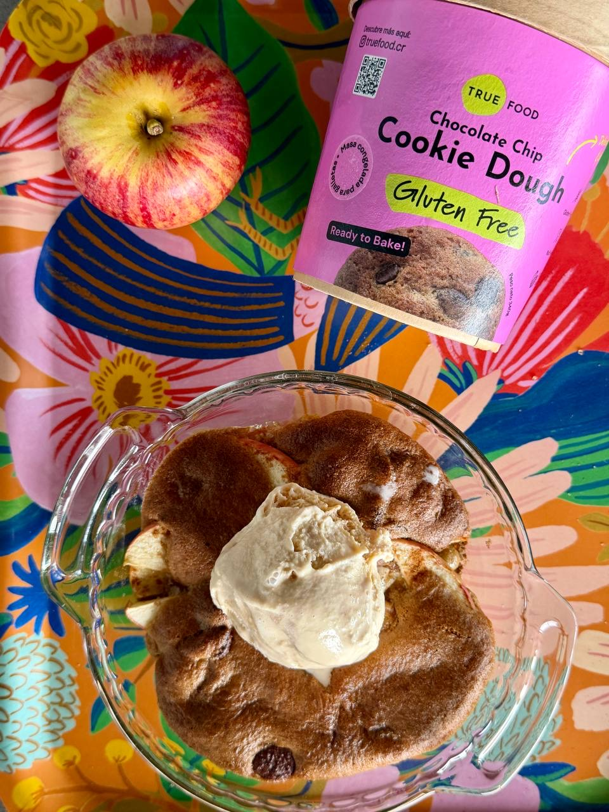
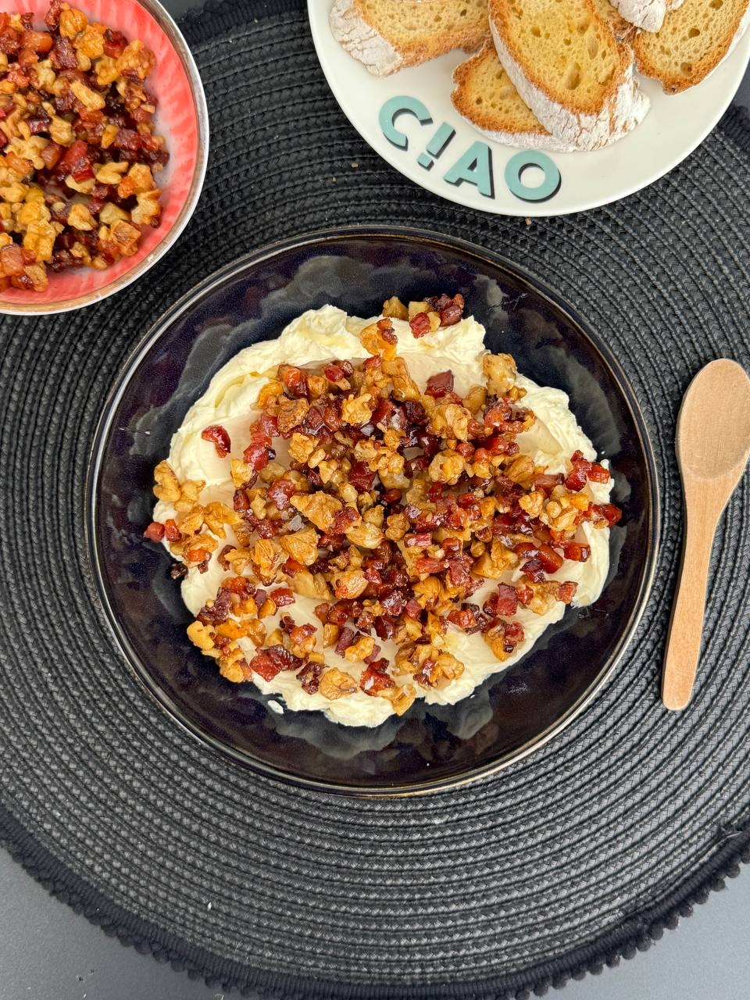

Blog
Recetas, ideas y lo que vamos aprendiendo sobre comer delicioso, saludable y Gluten Free.
-

Tarta de queso de cabra y prosciutto sin gluten
Receta de tarta sin gluten con base crujiente de Pan de Semillas, crema de queso de cabra con limón y miel, y prosciutto. Un aperitivo fácil para recibir.
-

Apple Cookie Sundae, postre sin gluten
Postre sin gluten de manzana horneada con canela, Cookie Dough True Food recién salido del horno y helado encima. Una receta fácil: 12 minutos de horno.
-

Aperitivo de tocineta y miel con pan sin gluten
Aperitivo de tocineta y nueces caramelizadas con miel sobre queso crema, para servir con pan sin gluten bien tostado. Una receta fácil para compartir.